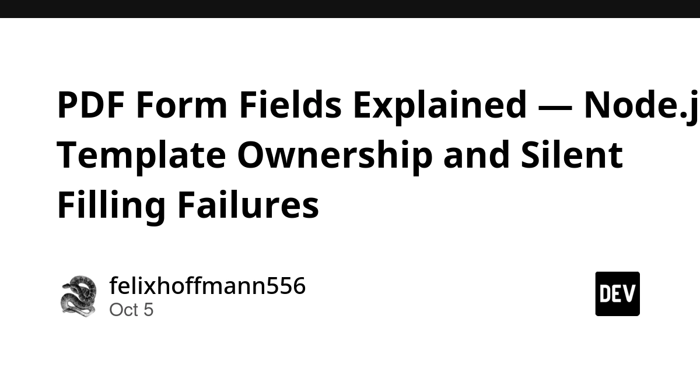
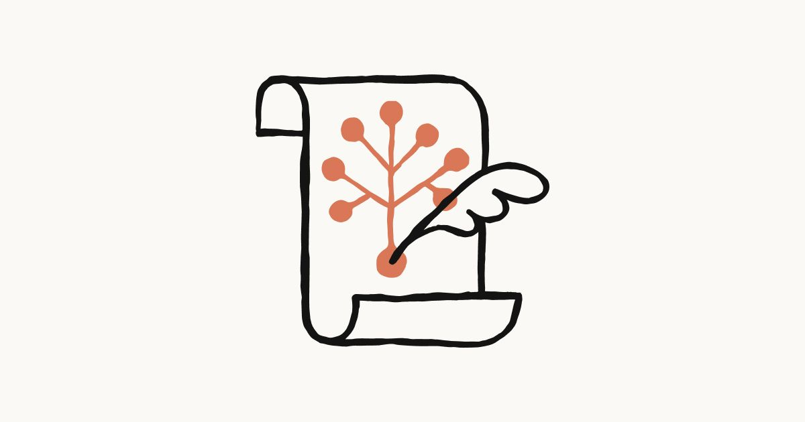
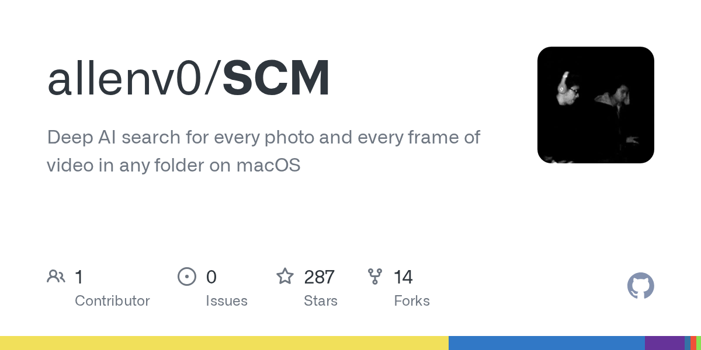
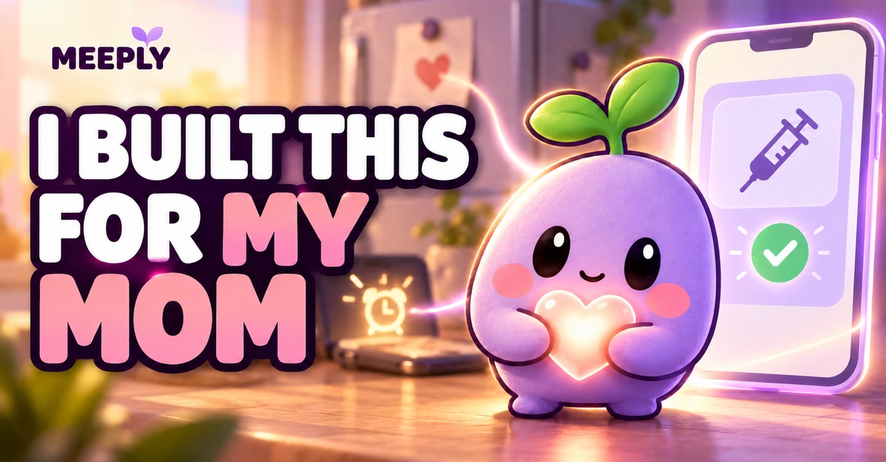
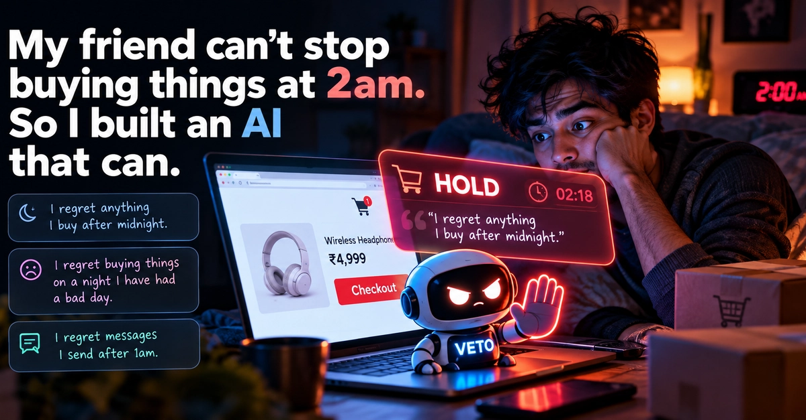
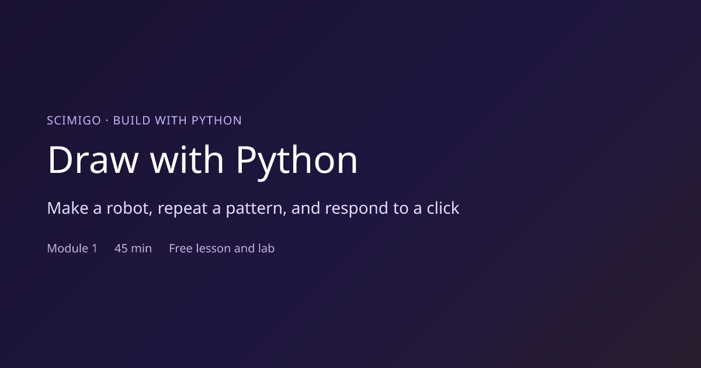

🔥 Top 3 (must read)
If leaders want AI speed, they must share the production risk
A viral post from an engineer described a company where AI wrote most of the specs, code, tests, and tickets, and people were pushed to ship faster than they could understand the work. The article argues this is an organisational problem, not a tooling one: if leaders demand AI speed, they must also own the production risk that comes with it. Why it matters: As an EM adopting AI in your team, this is the exact conversation to have with leadership before incidents happen, not after.
PDF Form Fields Explained — Node.js Template Ownership and Silent Filling Failures
PDF form fields are named interactive objects, not blank spots on a page, so a setter call that "succeeds" often proves nothing. The author's recipe: inspect the field tree first, match field type and export value, regenerate appearances, and flatten only when the recipient needs a static file. Why it matters: Practical Node.js backend guidance for a class of bugs that is very hard to debug after the fact.

HN discussion
[Homa: The end of TCP for AI clusters \[video\]](https://www.youtube.com/watch?v=eZ8WWZzoaR0) () — A talk on Homa, a transport protocol built to replace TCP inside data centers, where TCP's design choices hurt latency and tail performance. The HN thread debates how realistic a TCP replacement is in practice. Why it matters: Good distributed-systems background on why data-center networking is moving away from TCP, even if you never touch the protocol yourself.
N
🤖 AI for developers
Claude's Constitution
Anthropic published the document that defines how Claude is meant to think, behave, and prioritize. Worth a skim if your team relies on Claude Code, since it explains the model's refusal and judgment rules.

🎯 For me
If leaders want AI speed, they must share the production risk
EM angle on AI adoption: speed targets without shared risk ownership break teams.
PDF Form Fields Explained — Node.js
Node.js backend technique for reliable PDF form filling.
Nothing today on Playwright, Maestro, Flutter, or React.
💡 App ideas & indie builds
AI search for every photo and every frame of video on macOS
(HN, 142 points) — Local, natural-language search across your whole photo and video library, down to single video frames. Problem: people have thousands of photos and videos and cannot find "that clip where the dog jumps". Inspiration: local-first AI search over personal media is a strong, privacy-friendly product shape.

Meeply — a gentle medication routine for my mom, with an open Gemma AI helper
A medication reminder app with a soft, friendly AI helper, built for the author's mother. Problem: fear of a loved one forgetting scheduled medication when you cannot be there. Inspiration: care apps built for one specific person often reveal needs generic health apps miss.

My friend can't stop buying things at 2am. So I built an AI that can.
An AI that steps in during late-night impulse purchases instead of helping complete them. Problem: not a shopping problem, a "2am problem". Inspiration: AI that slows the user down is an underexplored product direction compared to AI that speeds things up.

Build with Python – a beginner course where your code draws
(HN) — A beginner programming course where every exercise produces a visible drawing. Problem: beginners lose motivation when output is just text. Inspiration: instant visual feedback as the core learning loop.

🎓 Try this
Next time a PDF form fill "succeeds" but the output looks empty, inspect the field tree before writing anything: list the fields, check each field's type and export value, then regenerate appearances. The full checklist is in PDF Form Fields Explained — Node.js.